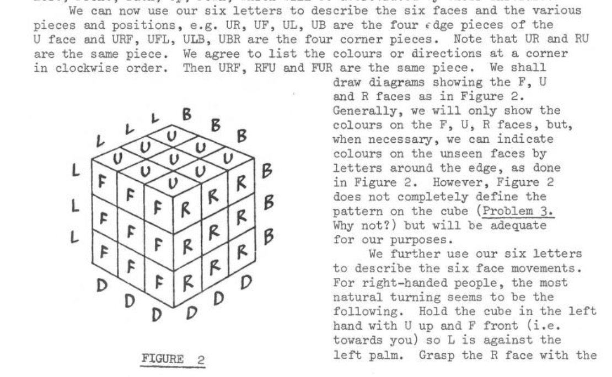

We lost the legendary David Singmaster in February 2023. Singmaster was instrumental in early cubing theory, publishing:
| 1. "Notes On Rubik's 'Magic Cube'" (1980), where he defined the face names for 3x3x3 moves and pieces that form the basis of modern puzzle notation. |  |
| 2. A step by Step Solution of Rubik's "Magic Cube", the oldest known publication of a layer-based method starting with cross. | |
| 3. The Cubing Circular (1981-1985), where he reported on early speedcubing competitions and the first World Championship, extensive cube math, God's algorithm, new puzzles, and more. |
Singmaster was active and jovial into his 80's, traveling, making friends, and writing about puzzles. He also competed officially in 2012. It's easy to take our modern speedcubing community for granted, but he effectively maintained one the first international cubing communities and it's likely that we wouldn't be quite the same without him.
Gathering for Gardner has posted two interviews with Singmaster on Youtube, including one about the early days of Rubik's Cube:
If you have any stories or pictures to share about David Singmaster on this site, feel welcome to email Lucas Garron or post in this speedsolving.com thread.